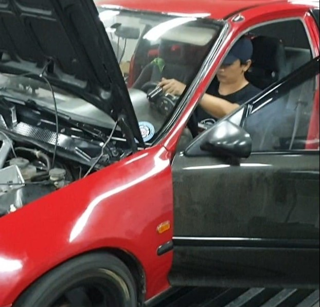

Ectuned founded back 2016 where in hobby turned into passion for racing, engine performance and tuning. All are made thru hardwork and perseverance aiming to be better each day with our cars as an extension of our self.
It all started as a hobby into tinkering mechanical aspect of combustion engine. Started from 2 stroke scooter ended up to inline 6 tubro charged engines. Use mainly for drag racing and some aspect of which also everything in between like autocross, street racing, sprints and daily driven cars.
Now we are into catering engine performance tuning and even simple preventive maintenance.
